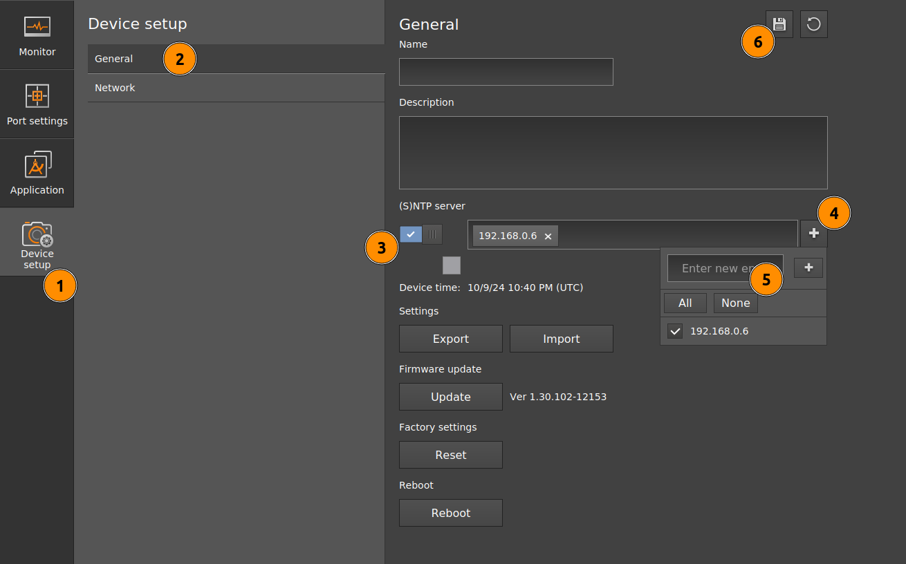

Time synchronization
The O3C camera uses Unix time. The value is represented as the number of nanoseconds since 1 January 1970 00:00:00 UTC. To synchronize the camera clock with a host or network time source, configure the device to use an NTP server.
Prerequisites
Before configuring synchronization, make sure that:
the O3C is connected to the network containing the NTP server;
the NTP server is reachable from the O3C; and
UDP port
123is allowed between the O3C and the NTP server.
The host system and the O3C do not need to use the same IP address. They must, however, be able to reach the same NTP server, or the host system must provide an NTP service on the local network.
Configure (S)NTP synchronization
When the SNTP synchronization is active, the timestamps of all the images sent from the O3C camera will be synchronized to the defined clock.
Note
Note that enabling synchronization through NTP requires that you consider the general architecture of your system.
The Time Serving machine needs to be fully booted before the O3C is started, to avoid having to perform a time jump.
Also, NTP servers have different levels of accuracy and the O3C might fail to synchronize with one if the accuracy is considered too low.
An alternative approach to (S)NTP is a time “translator” like: https://github.com/ethz-asl/cuckoo_time_translator
Activate (S)NTP Using ifmVisionAssistant
Navigate to
Device setupwindow.Click on
GeneralActivate (S)NTP server.
Click on + button to add available servers.
Save the configuration



Activate (S)NTP via ifm3d API
Receive the currently provided NTP server addresses and the currently used NTP address:
from ifm3dpy.device import O3C
o3c = O3C()
print(o3c.get(["/device/clock"]))
# Output available servers --> No Servers
print(o3c.get(["/device/clock/sntp/availableServers"]))
#set your local IP oh host as an available server
o3c.set({'device': {'clock': {'sntp': {'availableServers': ["192.168.0.110"]}}}})
o3c.get(["/device/clock/sntp/availableServers"])
# Output: {'device': {'clock': {'sntp': {'availableServers': ['192.168.0.110']}}}}
Verify synchronization
Read the device.clock in JSON configuration after saving the configuration on the device:
ifm3d o3cxxx config get --path "/device/clock"
The response contains the current synchronization state. For example:
{
"currentTime": "1728513093394961000",
"sntp": {
"active": true,
"activeServerAddress": "192.168.1.10",
"activeServerName": "",
"availableServers": [],
"systemClockSynchronized": true
}
}
Synchronization is successful when systemClockSynchronized is true. The
active server fields identify the configured NTP source. If the value remains
false, check the server address or hostname, network routing, DNS settings,
and firewall rules for UDP port 123.
The first synchronization can take some time after enabling SNTP. Read the status again after allowing the camera to contact the server. If the NTP server is unavailable, the camera continues to provide its local clock, but timestamps must not be treated as synchronized to the host system.
Timestamps
currentTime is a status value expressed in Unix nanoseconds. It is not the
NTP server configuration and should not be used to enable synchronization.
When systemClockSynchronized is true, timestamps generated by the O3C are
aligned with the configured NTP time source. Applications should still handle
clock corrections and should use the documented acquisition timestamp rather
than the host reception time when correlating sensor data.